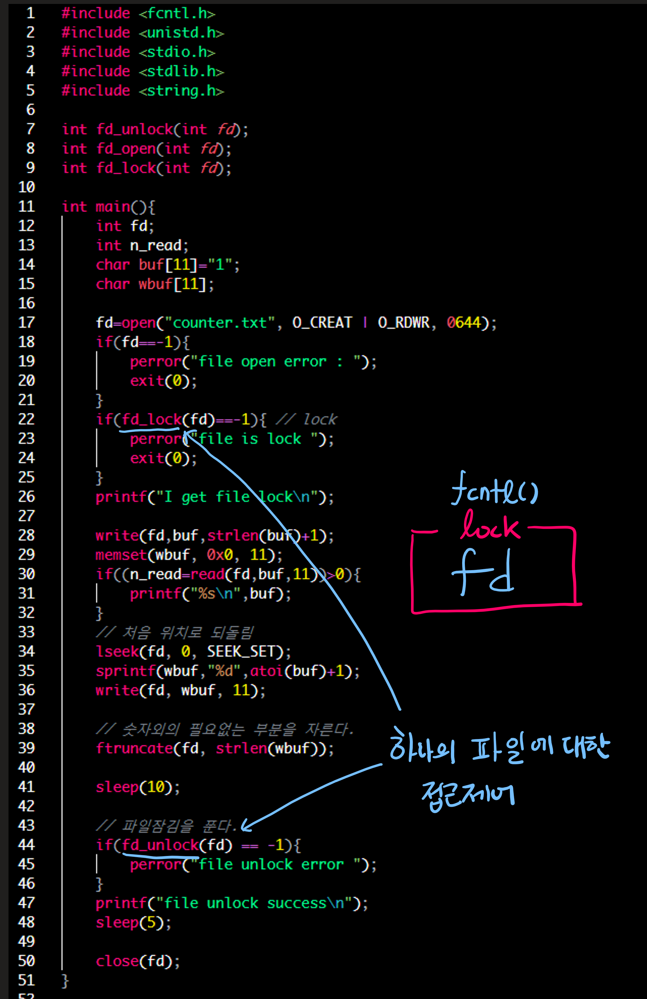

lowlevel I/O <2> fd를 통한 파일제어, lseek(), dup(), dup2(), ioctl(), fcntl()
lseek():2
스트림은 파일의 특정 위치에 연결되어 있다.
스트림이 연결되어 있는 위치를 파일 오프셋이라 한다.
#include <sys/types.h>
#include <unistd.h>
Off_t lseek(int fd, off_t offset, int whence);
기능: fd 내부의 파일 오프셋을 지정한 위치로 이동
| return | value |
| 성공 | 파일의 시작으로 부터 오프셋 위치 |
| 실패 | -1 |
| parameter | Description |
| fd | 파일 디스크립터 |
| offset | 오프셋 |
| whence | 모드 |
| whence | 이동 위치 |
| SEEK_SET | 파일의 처음을 기준으로 오프셋 계산 및 이동 |
| SEEK_CUR | 파일의 현재 위치을 기준으로 오프셋 계산 및 이동 |
| SEEK_END | 파일의 마지막을 기준으로 오프셋 계산 및 이동 |
dup():2, dup2():2
#include <unistd.h>
int dup(int oldfd);
int dup2(int oldfd, int newfd);
기능: 인자로 지정한 파일 디스크립터 복제
활용은 pipe dup사용하기 참고
ioctl():2
#include <sys/ioctl.h>
int ioctl(int fd, unsigned long request, ...);
기능: 스트림이 연결된 디바이스에 특화된 작업을 모두 포함하는 시스템 콜
- DVD 드라이브 여닫기, 음악 CD 재생
- 프린터 구동이나 일시 정지
- SCSI 디바이스 하드웨어 옵션 셜정
- 단말 통신 속도 설정 등
- 유닉스의 open(), read(), write(), close() 인터페이스 이외 기능들이 모두 ioctl()에 있다.
| parameter | Description |
| fd | 처리할 파일 디스크립터 |
| request | 어떤 작업을 할 것인가? |
| … | _request_파라미터에 따라 추가 지정해야 하는 인자 man ioctl_list에서 확인 할 수 있다. |
fcntl():2 파일 제어
- UNIX는 모든 것이 file로 되어 있다. 그래서.. file을 잘 다루어야한다!
- 일반 파일, socket, IPC, device등 모든 것이 파일이고 이를 특성 제어하는 것이 fcntl()이다.
- 대표적 Non-Blocking 셋팅!
#include <unistd.h>
#include <fcntl.h>
int fcntl(int fd, int cmd);
int fcntl(int fd, int cmd, long arg);
int fcntl(int fd, int cmd, struct flock *lock);
- 기능: 지정한 fd에 cmd로 특성 제어 한다.
| parameter | Description | arg | 비고 |
| fd | 제어할 파일 디스크립터 | ||
| cmd | F_DUPFD 지정한 fd를 복사하기 위해 사용 |
복사결과의 fd번호 | copied fd >= arg이며, 이미 사용중이면 가능하면서 가장 적은후로 Copy |
| F_GETFD 리턴 값으로 FD에 대한 flag 값을 넘겨준다. |
0 | 현재는 FD_CLOEXEC(close-on-exec) 정보만 넘겨준다 | |
| F_SETFD arg로 준 비트값 설정을 fd에 set |
설정 bit | FD_CLOEXEC(close-on-exec)설정 가능 | |
| F_GETFL fd에 대한 open() 호출 했을 때, flags 읽어옴 |
0 | - | |
| F_SETFL arg에 지정된 값으로 fd 특성 셋팅 |
설정 가능: O_APPEND, O_NONBLOCK, O_ASYNC 읽기 가능: O_RDONLY, O_WRONLY, O_RDWR |
(O_ASYNC는 비동기 입출력모델을 구현하기 위해 사용) 읽기 권한 정보를 읽어오는 것은 O_ACCMODE와 bit연산을 함으로써 얻을 수 있다. 그 밖 정보는 각각의 플래그등과 비트연산한다. ex) fcntl(fd, F_SETFL, O_RDWR | O_NONBLOCK | O_ASYNC) |
|
| F_GETOWN 비동기 입출력과 관련되어 사용 됨 |
- | SIGIO, SIGURG 신호를 받는 PID를 얻기위해 사용 | |
| F_SETOWN 비동기 입출력과 관련되어 사용 |
getpid() | SIGIO, SIGURG 신호를 받는 PID(혹은 그룹)을 설정하기 위해 사용 ex) fcntl(fd, F_SETOWN, getpid()) |
|
| F_SETAUXFL | O_ONESIGFD: 하나의 소켓당 하나의 이벤트가 대기열에 들어가도록 설정. RTS Overflow를 일어나지 않게한다. | RTS Overflow참고 | |
| F_SETSIG | 시그널 번호 | fd에 대해 시그널 셋 ex) fclntl(fd, F_SETSIG, SIGRTMIN): fd에 대해 RTS대응하도록 만든다. |
|
| Other flags | Refer to man page |
| return | value |
| 성공 | 0 |
| 실패 | -1 |
close-on-exec에 대하여
- 보통 프로세스에서 exec()하면, 새로운 프로세스는 기존의 이미지를 덮어쓴다.
- 특별한 설정이 없으면 fd를 그대로 넘겨준다.
#include <unistd.h>
#include <stdlib.h>
#include <fcntl.h>
#include <sys/types.h>
#include <sys/stat.h>
int main(){
int fd;
int val;
fd=open("exec_copy.txt",O_CREAT);
execl("/home/my_cvs/test/c_source/loop", "./loop", 0);
return 0;
}
- 그냥 무한 loop 시키는 프로그램이다.
- 실행 후, ps를 확인하고 /proc/pid/fd로 이동해서 ls를 보면
$ ls -al 합계 0 dr-x------ 2 root root 0 10월 25 13:59 . dr-xr-xr-x 3 root root 0 10월 25 13:59 .. lrwx------ 1 root root 64 10월 25 13:59 0 -> /dev/ttyp0 lrwx------ 1 root root 64 10월 25 13:59 1 -> /dev/ttyp0 lrwx------ 1 root root 64 10월 25 13:59 2 -> /dev/ttyp0 lr-x------ 1 root root 64 10월 25 13:59 3 -> /home/mycvs/test/exec_copy.txt - exec하면서 fd가 상속되었음을 알 수 있다.
- 때때로 exec하면서 기존 fd를 정리하고 실행하고 싶을 때도 있다.
- 이러한 경우를 Close-on-exec이라고 한다.
- fcntl()을 사용하면, fd에 대해 close-on-exec를 작동케할 수 있다.
- 이미 open()에서 close-on-exec를 애초에 설정하고 fd를 여는 방법도 있다. 참고
F_DUPFD
- f_dupfd.c
#include <fcntl.h>
#include <sys/types.h>
#include <sys/stat.h>
#include <stdio.h>
int main(){
int testfd;
int fd;
fd=open("test.txt", O_CREAT);
testfd=fcntl(fd,F_DUPFD, 10);
printf("testfd: %d\n", testfd);
testfd=fcntl(fd,F_DUPFD, 10);
printf("testfd: %d\n", testfd);
return 0;
}
- 이미 사용중인 fd라면 arg보다는 크지만 허용가능한 fd 수 중에서 가장 작은 수로 부여
F_SETFD/F_GETFD
- close-on-exec 값을 조절하기 위해 사용된다.
- F_GETFD를 이용해서, FD_CLOEXEC 값을 가져옴
- F_SETFD를 이용해 이 값을 변경한다.
- 기본적으로는 exec할 때 close되지 않는다. 그럼 f_dupfd.c를 close-on-exec 하도록 약간 변경해보자.
#include <unistd.h>
#include <stdlib.h>
#include <fcntl.h>
#include <sys/types.h>
#include <sys/stat.h>
int main(){
int fd;
int val;
fd=open("exec_copy.txt",O_CREAT,0600);
// FD_CLOEXEC 값을 fcntl을 이용해서 가져온 다음 세팅되어 있는지 검사한다
val=fcntl(fd,F_GETFD,0);
if(val&FD_CLOEXEC)
printf("close-on-exec on\n");
else
printf("close-on-exec off\n");
// FD_CLOEXEC set
val |= FD_CLOEXEC;
if(val&FD_CLOEXEC)
printf("close-on-exec on\n");
else
printf("close-on-exec off\n");
fcntl(fd,F_SETFD,val); // set val
execl("/home/my_cvs/test/c_source/loop", "./loop", 0);
return 0; // It shouldn't be executed.
}
F_GETFL/F_SETFL
- F_GETFL은 open()시 fd의 flags값을 가져온다.
- F_SETFL은 fd값 특성을 셋팅한다.
- F_SETFL을 이용해 변경할 수 있는 특성은 O_APPEND, O_NONBLOCK, O_OASYNC다. O_\RDONLY, O_WRONLY, O_RDWR은 읽기만 가능하다.
- 읽기 권한 정보를 읽어오는 것은 O_ACCMODE와 비트 연산
- 다른 정보는 각각의 플래그와 비트연산으로 얻는다.
- fgetfl_test.c
#include <fcntl.h>
#include <unistd.h>
#include <sys/types.h>
#include <sys/stat.h>
#include <stdio.h>
#include <stdlib.h>
int main(){
int mode, fd, value;
fd=open("test.sh", O_RDONLY|O_CREAT, 0644);
if(fd<0){
perror("open error\n");
exit(-1);
}
value=fcntl(fd,F_GETFL,0); // fd의 open시 flags 얻음
mode=value & O_ACCMODE;
if (mode==O_RDONLY)
printf("O_RDONLY on\n");
else if(mode == O_WRONLY)
printf("O_WRONLY on\n");
else if(mode == O_RDWR)
printf("O_RDWR on\n");
if(value & O_NONBLOCK)
printf("O_NONBLOCK on\n");
else
printf("BLOCKING mode on\n");
if(value & O_ASYNC)
printf("O_ASYNC on\n");
return 0;
}
NON_BLOCKING ON
- fsetfl_test.c
#include <stdio.h>
#include <stdlib.h>
#include <fcntl.h>
#include <unistd.h>
#include <sys/types.h>
#include <sys/stat.h>
#include <string.h>
#define STDIN 0
int main(){
int mode, fd, value;
char buf[255];
memset(buf, 0x0, sizeof(buf));
// 처음 입력은 BLOCKING MODE
read(STDIN, buf, 255);
printf("-> %s\n", buf);
memset(buf, 0x0, sizeof(buf));
// NON_BLOCKING 모드로 변경
value=fcntl(STDIN, F_GETFL, 0);
value |= O_NONBLOCK;
fcntl(STDIN, F_SETFL, value);
printf("Non blocking mode on\n");
// wait 2 sec
sleep(2);
// busy wait start
while(1){
read(STDIN,buf,sizeof(buf));
printf("-> %s\n", buf);
fflush(stdout);
break;
}
return 0;
}
- blocking모드 일 땐, 입력을 기다리지만 NON_BLOCKING 모드일 땐 2초 뒤 그냥 끝낸다.
F_GETOWN/F_SETOWN
- F_GETFL/F_SETFL은 fd의 특성을 변경한다. 그 중 O_ASYNC는 비동기 입출력과 관련된 것이다.
- F_GETOWN/F_SETOWN 은 이 비동기 입출력과 관련된 flags이다.
- 이들 flag를 사용함으로써 비동기 입출력 모드로 fd가 설정되어 있을 때, 어떤 프로세스(그룹) 아이디로 부터 오는 시그널을 받을지를 지정해 줄 수 있다.
- 추후 명세
fcntl을 통한 잠금방법
- fcntl을 통해 파일 잠금, 레코드 잠금 가능
- 잠금
- 멀티 스레드프로그램에서, 여러 스레드가 하나의 파일에 동시에 접근하는 경우, 파일 잠금이 필요할 수 있다.
한번에 하나의 스레드만이 읽기 및 쓰기를 해야하는 경우가 있기 때문이다. - DB의 경우 파일잠금 + 레코드잠금이 필요하다. 특정 레코드에는 하나의 스레드만 접근 제어해야한다.
- 레코드 잠금은 해당 프로세스가 액세스하는 부분만 잠금!
- UNIX에서는 fcntl()을 통해 잠금 구현
- 멀티 스레드프로그램에서, 여러 스레드가 하나의 파일에 동시에 접근하는 경우, 파일 잠금이 필요할 수 있다.
#include <unistd.h>
#include <fcntl.h>
int fcntl(int fd, int cmd, struct flock* lock);
- struct flock* lock이 레코드 잠금을 위해 사용된다(잠금에 필요한 정보를 포함).
| parameter | description |
| int fd | 설정할 파일 디스크립터 |
| int cmd | 명령 F_SETLK: flock 구조체에 설정된 잠금을 얻기/잠금을 풀기위해 사용 - 프로세스는 특정 영역의 잠금을 검사해서 잠금을 사용할 수 있으면 잠금을 얻음. 작업이 끝나면 잠금을 품 - 잠금을 얻을 수 없으면, -1을 반환하고 errno EACCESS, EAGAIN을 설정 - 잠금을 검사하는 용도로 사용할 수 있다. F_SETLKW: F_SETLK와 같은 일을 하지만, 에러를 리턴하는 대신 잠금이 풀릴때까지 해당영역에서 기다린다(block). - F_SETLK의 봉쇄형이다. F_GETLK: 잠금이 있는지 없는지 검사 - 만약 잠금이 없다면 l_type을 F_UNLCK로 설정 - 만약 잠금이 있다면, 현재의 flock 정보를 flock 구조체로 돌려준다. |
struct flock{
short int l_type; /* 잠김 타입: F_RDLCK, F_WRLCK, F_UNLCK */
short int l_whence; /* 파일의 절대 위치 */
__off_t l_start; /* 파일의 offset */
__off_t l_len; /* 잠그고자 하는 파일의 길이 */
__pid_t l_pid; /* 잠금을 얻은 프로세스의 pid */
};
| struct flock의 멤버 | description |
| short int l_type | F_RDLCK: 읽기 전용 F_WRLCK: 쓰기 전용 F_UNLCK: 잠금 되지 않음 |
| short int l_whence | 파일에서 절대적 위치 |
| __off_t l_start | l_whence로 부터 이동한 거리(offset) |
| __off_t l_len | 잠그고자 하는 파일 길이 |
- l_whence: SEEK_SET, l_start: 16, l_len: 16
=> 레코드 위치: 처음 + 16 (16th) ~ 32 사이 데이터 블럭 잠금
파일 잠그기 예제 by fcntl

code
#include <fcntl.h>
#include <unistd.h>
#include <stdio.h>
#include <stdlib.h>
#include <string.h>
int fd_unlock(int fd);
int fd_open(int fd);
int fd_lock(int fd);
int main(){
int fd;
int n_read;
char buf[11]="1";
char wbuf[11];
fd=open("counter.txt", O_CREAT | O_RDWR, 0644);
if(fd==-1){
perror("file open error : ");
exit(0);
}
if(fd_lock(fd)==-1){ // lock
perror("file is lock ");
exit(0);
}
printf("I get file lock\n");
write(fd,buf,strlen(buf)+1);
memset(wbuf, 0x0, 11);
if((n_read=read(fd,buf,11))>0){
printf("%s\n",buf);
}
// 처음 위치로 되돌림
lseek(fd, 0, SEEK_SET);
sprintf(wbuf,"%d",atoi(buf)+1);
write(fd, wbuf, 11);
// 숫자외의 필요없는 부분을 자른다.
ftruncate(fd, strlen(wbuf));
sleep(10);
// 파일잠김을 푼다.
if(fd_unlock(fd) == -1){
perror("file unlock error ");
}
printf("file unlock success\n");
sleep(5);
close(fd);
}
/* 파일이 잠겨있는지 확인하고 잠겨있지 않다면,
* 잠금을 얻고
* 잠겨있으면, 잠김이 풀릴때까지 기다린다(F_STREAM)
*/
int fd_lock(int fd){
struct flock lock;
lock.l_type=F_WRLCK;
lock.l_start=0;
lock.l_whence=SEEK_SET;
lock.l_len=0;
return fcntl(fd, F_SETLKW, &lock);
}
/* 파일잠금을 얻은 후 모든 작업이 끝난다면 파일 잠금을 돌려줌 */
int fd_unlock(int fd){
struct flock lock;
lock.l_type=F_UNLCK;
lock.l_start=0;
lock.l_whence=SEEK_SET;
lock.l_len=0;
return fcntl(fd, F_SETLK, &lock);
}
$ ./file_lock_using_fcntl
I get file lock # 이 단계에서, 프로그램은 counter.txt를 만들어 1을 write한다.
file unlock sucess
$ cat counter.txt
2 # 원래 1이 있던 텍스트에서 +1하여 2를 write 된 파일
- 하나의 fd에 접근제어해서 사용하는 예
레코드 잠그기
-
기본적으로 파일을 잠그는 방법과 동일하다. 단지 특정 범위에 대해서만 잠금을 허용하는게 다르다.
-
테스트용 샘플 프로그램은 다중 프로세스 카운터로 하나의 파일에 여러 개의 프로세스가 자신에게 할당된 레코드에 카운팅한다.
- 잠금, 풀기할 때 레코드의 영역 하나의 카운터 블럭은 16Byte로 고정 되며, 카운터 숫자 이외의 영역은 NULL로 채워 짐
- 프로세스가 1번째 counter 데이터에 접근할 때 굳이 1번부터 16번까지 전부다 잠글 필요는 없으므로 1번만 잠근다.
- 이때 프로세스가 1번째 counter데이터에 접근 중일때, 다른 프로세스는 접근하지 못하게한다.
#include <unistd.h>
#include <stdio.h>
#include <string.h>
#include <sys/types.h>
#include <sys/stat.h>
#include <fcntl.h>
#include <stdlib.h>
#define BLOCK_SIZE 16
int main(void){
int fd;
int i;
char buf[BLOCK_SIZE];
if ((fd=open("b_counter",O_CREAT | O_WRONLY)) == -1){
perror("file open error: ");
exit(0);
}
for(i=1; i<4; i++){
memset(buf, 0x0, BLOCK_SIZE);
sprintf(buf,"%d",i);
write(fd, buf, BLOCK_SIZE);
}
close(fd);
}
- 위 코드는 b_counter라는 파일 만든다.
od -c명령어를 사용해 counter정보가 제대로 만들어 졌는지 확인한다.
- 데이터 블럭단위만 잠근다.